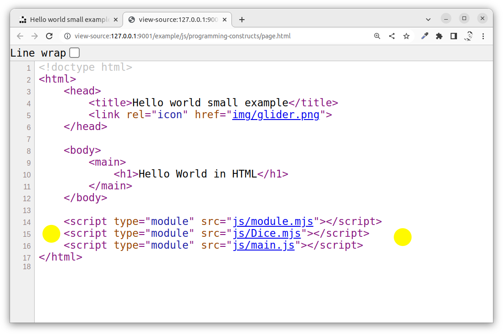
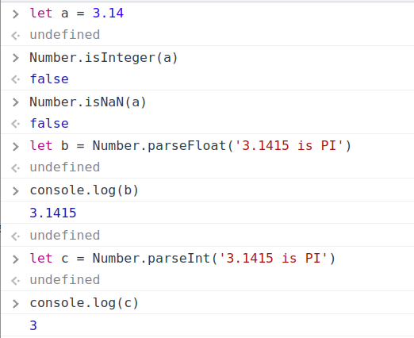
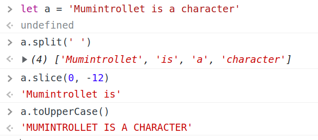
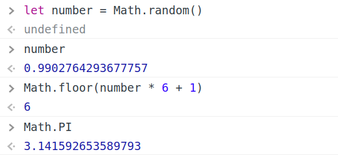

<!doctype html>
<html class="theme-5">
<meta charset="utf-8" />
<link href="../html-slideshow.bundle.min.css" rel="stylesheet" />
<link href="../style.css" rel="stylesheet" />
<script src="https://dbwebb.se/cdn/js/html-slideshow_v1.1.0.bundle.min.js"></script>

<title>JavaScript - Programming</title>

<script data-role="slide" type="text/html" data-markdown class="titlepage center">
# JavaScript
## Programming
### Mikael Roos
</script>


<script data-role="slide" type="text/html" data-markdown>
# Agenda

* Variables & types
    * Array
    * Object
* Conditional statements, if, switch
* Loop, iteration
* Functions
* Modules
* Classes
* Built-ins

</script>


<script data-role="slide" type="text/html" data-markdown class="titlepage center">
# The main()
</script>


<script data-role="slide" type="text/html" data-markdown>
# No need of main

```
/**
 * A comment.
 */
'use strict'

console.log('Hello world')
```

</script>


<script data-role="slide" type="text/html" data-markdown>
# main()

* Use main() for improved structure

```
/**
 * A main function.
 *
 * @returns {void}
 */
function main () {
  console.log('Hello world')
}

main()
```

</script>


<script data-role="slide" type="text/html" data-markdown class="titlepage center">
# Variables & types
</script>


<script data-role="slide" type="text/html" data-markdown>
# Variables

```
// Define variables
let a = 1
let b = '1'
let c
let d = null

console.log(a) // 1
console.log(b) // '1'
console.log(c) // undefined
console.log(d) // null
```

</script>


<script data-role="slide" type="text/html" data-markdown>
# Variables...

* Block scope {}
    * let
    * const - the variable reference does not change

* Function scope ()
    * var
    * Hoisting (initialized to undefined before run)
</script>


<script data-role="slide" type="text/html" data-markdown>
# const

```
// const value can not be changed
const a1 = 1
a1 = 2      // error

// const can still change content of array/object type
const a2 = []
a2[0] = 1
```
</script>


<script data-role="slide" type="text/html" data-markdown>
# Types primitive

* boolean (true, false)
* number (1, 3.14)
* string ('', "", ``)
* null
* undefined
</script>


<script data-role="slide" type="text/html" data-markdown>
# Types reference

* object
* array (object)
</script>


<script data-role="slide" type="text/html" data-markdown class="titlepage center">
# Array
</script>


<script data-role="slide" type="text/html" data-markdown>
# Array

```
// Array create and assign
const b1 = [1, '1', null]
b1[9] = []

// Inspect array
console.log(b1.length) // 10
console.log(b1[0])     // 1
console.log(b1)        // [1, '1', null, empty × 6, Array(0)]

// Remove item
delete b1[9]
console.log(b1)        // [1, '1', null, empty × 7]
console.log(b1.length) // 10
```

<p class="footnote">Use array functions like pop, push, shift, splice.</p>

</script>


<script data-role="slide" type="text/html" data-markdown class="titlepage center">
# Object
</script>


<script data-role="slide" type="text/html" data-markdown>
# Object

```
// Object key/value container
const c1 = {}
const c2 = {
  key1: 'value1',
  key2: 'value2', 
}

// Mutable object
c1.key3 = 'value3'

console.log(c1) // {key3: 'value3'}
console.log(c2) // {key1: 'value1', key2: 'value2'}
```
</script>


<script data-role="slide" type="text/html" data-markdown>
# Object access

```
// Dot notation
myCar.make = "Ford";
myCar.model = "Mustang";
myCar.year = 1969;

// Bracket notation
myCar["make"] = "Ford";
myCar["model"] = "Mustang";
myCar["year"] = 1969;
```
</script>


<script data-role="slide" type="text/html" data-markdown class="titlepage center">
# Conditional statements, if, switch
</script>


<script data-role="slide" type="text/html" data-markdown>
# if

```
// if
let condition = true

if (condition) {
  console.log('YES')
}
```
</script>


<script data-role="slide" type="text/html" data-markdown>
# if, else

```
// if, else if, else
let condition1 = false
let condition2 = false

if (condition1) {
  console.log('NO')
} else if (!condition2) {
  console.log('YES')
} else {
  console.log('NO')
}
```
</script>


<script data-role="slide" type="text/html" data-markdown>
# switch

```
// switch
let sw = 'a'

switch (sw) {
  case 'a':
    console.log('YES')
  break

  case 'b':
  case 'c':
    console.log('NO')
  break
 
  default:
    console.log('NO')
}
```
</script>


<script data-role="slide" type="text/html" data-markdown class="titlepage center">
# Loop, iteration
</script>


<script data-role="slide" type="text/html" data-markdown>
# for loop

```
// for loop
for (let i = 0; i < 9; i++) {
  console.log(i)
}
```
</script>


<script data-role="slide" type="text/html" data-markdown>
# while loop

```
// while loop
let condition4 = 0

while (condition4 < 9) {
  condition4++;
  console.log(condition4)
}
```

<p class="footnote">The do-while loop is also supported, as is break and continue.</p>

</script>


<script data-role="slide" type="text/html" data-markdown>
# Loop array

```
// loop array
const xs = [1, '1']

for (var i = 0; i < xs.length; i++) { console.log(xs[i]); }

xs.forEach((x, i) => console.log(x));

for (const x of xs) { console.log(x); }
```

<p class="footnote">The forEach is functional programming style.</p>

</script>


<script data-role="slide" type="text/html" data-markdown>
# Loop object

```
// loop object
const p = {
  "p1": "value1",
  "p2": "value2",
  "p3": "value3"
};

for (let [key, value] of Object.entries(p)) {
  console.log(`${key}: ${value}`);
}
```

<p class="footnote">The for..of is useful to iterate objects and arrays.</p>

</script>


<script data-role="slide" type="text/html" data-markdown class="titlepage center">
# Functions
</script>


<script data-role="slide" type="text/html" data-markdown>
# Function with arguments

```
/**
 * Function with arguments
 *
 * @param {string} arg1 the argument one
 * @param {string} arg2 the argument two
 * @returns {void}
 */
function func1 (arg1, arg2) {
  console.log(arg1 + arg2)
}

func1('first', 'second')  // firstsecond
```

</script>


<script data-role="slide" type="text/html" data-markdown>
# Default arguments

```
/**
 * Function with default arguments
 *
 * @param {string} arg1 the argument one
 * @param {string} arg2 the argument two
 * @returns {void}
 */
 function func2 (arg1, arg2 = 'SECOND') {
  console.log(arg1 + arg2)
}

func2()         // undefinedSECOND
func2('first')  // firstSECOND
```

</script>


<script data-role="slide" type="text/html" data-markdown>
# First class functions

```
// First class function
const f1 = function (a) {
  console.log(a)
}

f1('Hello')     // Hello
console.log(f1) // Function
```
</script>


<script data-role="slide" type="text/html" data-markdown>
# Arrow functions

```
// Arrow function
const f2 = (a) => {
  console.log(a)
}

f2('Hello')     // Hello
console.log(f2) // Function
```
</script>


<script data-role="slide" type="text/html" data-markdown>
# Self-invoking functions

```
// Self-invoking function
// (function (parameters) {
//   //body of the function
// })(arguments);

;(function () {
  let a = 1
  a += 2
  console.log(a)
})()
```

<p class="footnote">The ; closes any prior statement to avoid trouble.</p>

</script>


<script data-role="slide" type="text/html" data-markdown class="titlepage center">
# Modules
</script>


<script data-role="slide" type="text/html" data-markdown>
# ESM

* ECMAScript Modules
* Supported by all modern browsers
* Recommended way to write modular code

</script>


<script data-role="slide" type="text/html" data-markdown>
# Export

```
/**
 * A module exporting stuff.
 */
const mc1 = 'c1'

function mf1 () {
  return 'f1'
}

function mf2 () {
  return 'f2'
}

export {mc1, mf1, mf2}
```
</script>


<script data-role="slide" type="text/html" data-markdown>
# Import

```
// import from modules
import {mc1, mf1, mf2} from './module.mjs'

console.log(mc1)    // c1
console.log(mf1())  // f1
console.log(mf2())  // f2
```
</script>


<script data-role="slide" data-markdown type="text/html" class="center">
# Modules in HTML
<figure>
    
    <figcaption>Include JavaScript modules in the page.</figcaption>
</figure>
</script>


<script data-role="slide" type="text/html" data-markdown class="titlepage center">
# Classes
</script>


<script data-role="slide" type="text/html" data-markdown>
# Classes

* Classical classes
* Syntactic sugar
* Object orientation

</script>


<script data-role="slide" type="text/html" data-markdown>
# Export class

```
export default class Dice {

    #last

    constructor () {
      this.#last = null
    }

    roll () {
      this.#last = Math.floor(6*Math.random())+1
      return this.#last
    }

    lastRoll () {
      return this.#last
    }
}
```
</script>


<script data-role="slide" type="text/html" data-markdown>
# Import and use class

```
// Import dice class
import Dice from './Dice.mjs'

// Use class
const die = new Dice()

die.roll()

console.log(die.lastRoll())

// die.#last = 7  // Error on private field
```
</script>


<script data-role="slide" type="text/html" data-markdown>
# Built-in objects

* Numbers and Date
    * Number, BigInt, Math, Date
* Text
    * String, RegExp
* Structure
    * JSON, Array
* Global functions

</script>


<script data-role="slide" type="text/html" data-markdown class="center">
# Work Numbers

<figure>
    
    <figcaption>Work with numbers.</figcaption>
</figure>
</script>


<script data-role="slide" type="text/html" data-markdown class="center">
# Work String

<figure>
    
    <figcaption>Work with strings.</figcaption>
</figure>
</script>


<script data-role="slide" type="text/html" data-markdown class="center">
# Work Math

<figure>
    
    <figcaption>Work with math expressions.</figcaption>
</figure>
</script>


<script data-role="slide" type="text/html" data-markdown>
# The language

* Imperative
* Functional
* Prototype based object model
* Classical class based object orientation
* Modern multi paradigm language

</script>


<script data-role="slide" type="text/html" data-markdown>
# Resources

* MDN: JavaScript reference
* W3Schools: JavaScript Tutorial
* Book: JavaScript for impatient programmers (ES2022 edition)

<p class="footnote">The book is free and online.</p>

</script>


<script data-role="slide" type="text/html" data-markdown>
# Summary

* Variables & types
    * Array
    * Object
* Conditional statements, if, switch
* Loop, iteration
* Functions
* Modules
* Classes
* Built-ins

</script>


<script data-role="slide" type="text/html" data-markdown class="titlepage center">
# The end
</script>


<script data-role="slide" type="text/html" data-markdown>
</script>

</html>
